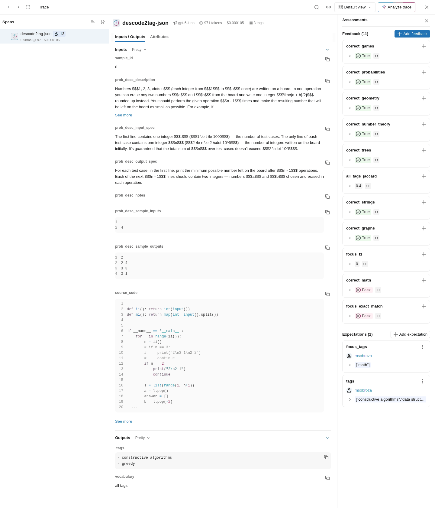

MLflow
descode2tag-json misses math on dev problem 0
Graded per tag
One filter, correct_math = false: 798 dev problems.
Cost and tokens per call
Here gpt-6-luna, 971 tokens, $0.000105.
Rebuilt for free
From committed files: an empty store needs no paid call.